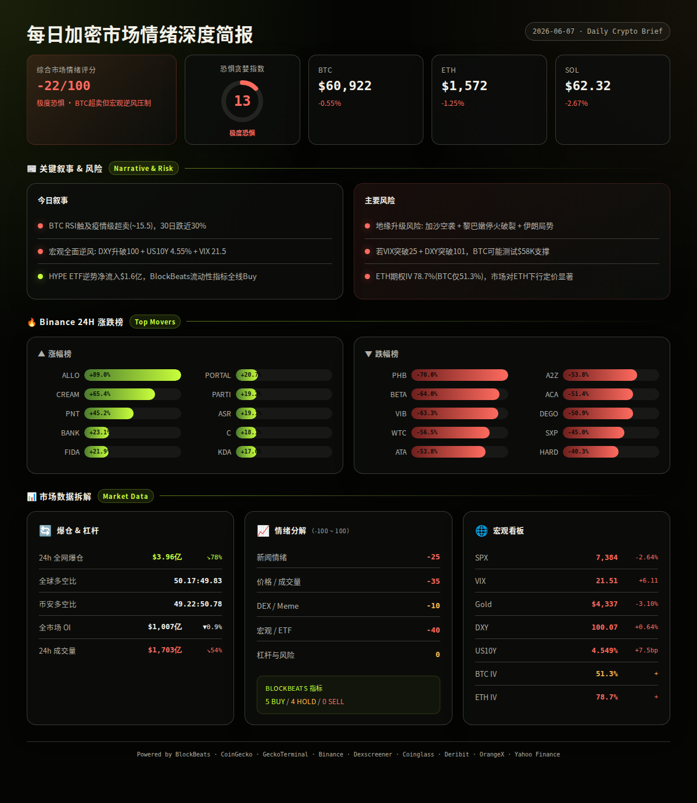
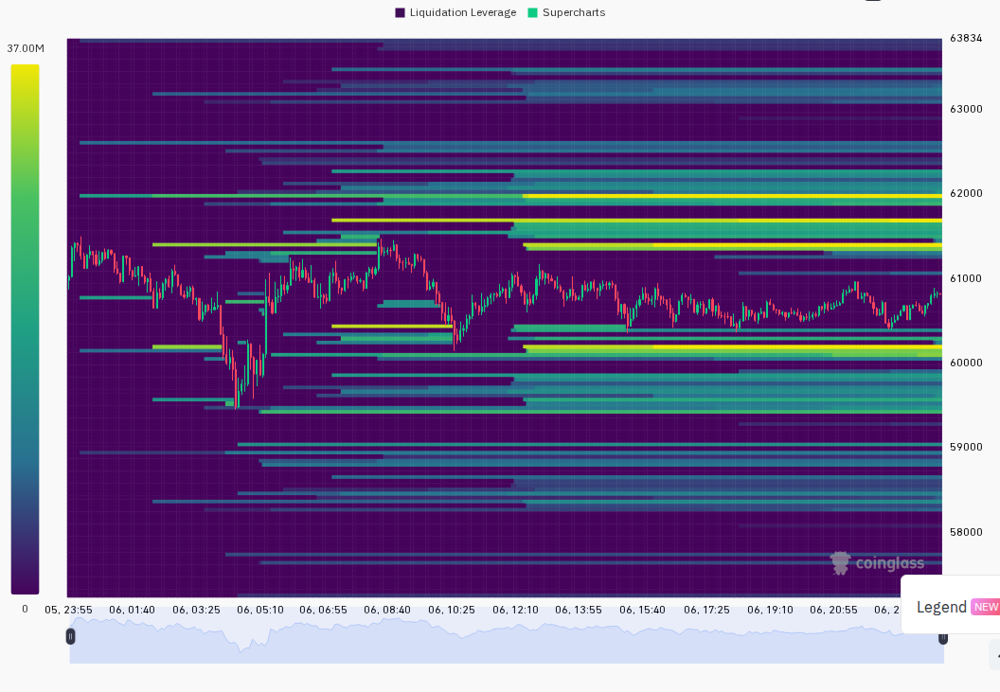
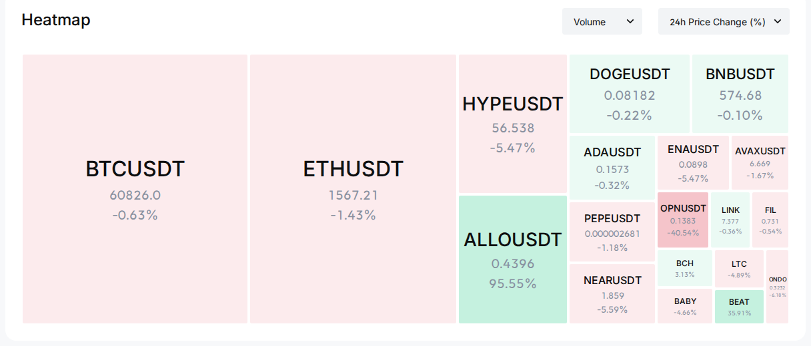

=== 第一段：叙事与风险面 ===
比特币经历近30%月度跌幅后RSI触及疫情级超卖水平(~15.5)，技术面发出潜在反弹信号，但宏观逆风（DXY上升、美债收益率走高、VIX升至21.5恐慌区间）与地缘风险压制市场情绪。山寨币普遍承压，HYPE ETF逆势吸金成为少数亮点。（BlockBeats, multi-source）
24h变化: 情绪 极度恐惧(F&G 13) | BTC ↘0.5% | ETH ↘1.3% | SOL ↘2.7% | VIX 21.5(恐慌升高) | 成交量 ↘54% | 爆仓 ↘78% (multi-source)
BTC / ETH / SOL
信息 1: 比特币近30日跌幅近30%，日线RSI降至约15.5，创2020年3月新冠崩盘以来最低超卖读数。分析师指出技术性反弹目标可看向$70,000区间，但需宏观面配合确认。（BlockBeats）
信息 2: Longling Capital疑似减持10,000 ETH（约$1,568万）转入Binance，或为降低清算风险。该地址此前已多次在下跌中转移资产。（BlockBeats）
信息 3: 一个沉睡14年的"Satoshi时代"比特币地址突然出现链上活动，引发社区对远古巨鲸动向的猜测。（BlockBeats）
ETF / 宏观 / 监管
信息 4: BTC现货ETF 6月6日净流出$47.8M，较前日$278.4M大幅收窄。HYPE ETF逆势净流入近$1.6亿，在BTC疲软背景下引发华尔街新一轮加密热潮讨论。（BlockBeats）
信息 5: 美国5月非农数据超预期强劲，市场对加息预期升温，美国科技股单日蒸发超$1万亿市值。VIX恐慌指数跃升至21.51（恐慌升高区间），半导体股涨势戛然而止。（BlockBeats, Yahoo Finance）
信息 6: 全球石油库存告急，霍尔木兹海峡油轮通行协议仍未达成，下一轮油价飙升可能冲击全球经济与市场。（BlockBeats）
地缘政治
信息 7: 以色列军方对加沙多处目标发动空袭，造成多人伤亡。黎巴嫩停火协议签署数日后以军再度袭击黎军事车辆，致1名将军及2名士兵死亡。伊朗外交部就美国持续违反停火协议发表声明。（BlockBeats）
预测市场 / Polymarket
信息 8: Polymarket知名巨鲸Adrian Cronauer疑似遭遇钓鱼攻击，损失超$200万。社区关注该事件可能对预测市场大额参与者信心的影响。（BlockBeats）
融资 / VC
信息 9: 知名加密与AI投资机构Variant完成$2.22亿新基金募集（Variant 4），将继续聚焦早期AI与加密项目。Coinbase联创旗下长寿科技公司NewLimit获$4.35亿C轮融资。SpaceX前首任员工创立的Impulse Space完成$5亿D轮融资。（BlockBeats）
板块轮动（CoinGecko板块24h涨幅）
信息 10: 涨幅前三板块：NFT Lending/Borrowing +57.0%，Arcade Games +47.1%，TRY Stablecoin +32.1%。跌幅前三板块：TimeFi -24.5%，Orynth Ecosystem -24.2%，Leveraged Token -23.9%。板块整体缩量下跌，仅极少数边缘板块收涨。（CoinGecko）
Binance 涨跌榜（USDT交易对24h）
信息 11: 涨幅前十：ALLO +89.0%，CREAM +65.4%，PNT +45.2%，BANK +23.1%，FIDA +21.9%，PORTAL +20.7%，PARTI +19.2%，ASR +19.1%，C +18.1%，KDA +17.6%。跌幅前十：PHB -70.0%，BETA -64.0%，VIB -63.3%，WTC -56.5%，ATA -53.8%，A2Z -53.8%，ACA -51.4%，DEGO -50.9%，SXP -45.0%，HARD -40.3%。极端涨跌并存，多只代币跌幅超50%显示局部流动性危机。（Binance）
风险 1: 宏观逆风加剧 — DXY升至100.07(+0.64% 24h)，US10Y升至4.549%(+7.5bp 24h)，两者同步上行对风险资产形成双重压制。
→ 观察: 若DXY突破101且US10Y突破4.6%，则加密市场可能面临新一轮抛压；失效条件: 若本周CPI数据低于预期，加息预期降温可缓解压力。（BlockBeats, Yahoo Finance, analysis）
风险 2: 地缘政治升级 — 加沙空袭、黎巴嫩停火破裂、伊朗局势持续紧张，油价飙升风险上升。
→ 观察: 若布伦特原油突破前高且VIX持续>22，则风险资产将全面承压；失效条件: 若各方重回谈判桌且达成新停火协议，地缘溢价将快速消退。（BlockBeats, analysis）
风险 3: VIX恐慌蔓延 — VIX升至21.51（恐慌升高区间），美股单日蒸发万亿市值。历史数据显示VIX>20时BTC与SPX相关性显著增强。
→ 观察: 若VIX进一步升至>25（恐慌区间），BTC有较大概率测试$58,000支撑；失效条件: 若VIX快速回落至<18，则加密市场可独立企稳。（Yahoo Finance, analysis）
风险 4: ETH清算压力 — Longling Capital等大地址持续减持ETH，显示链上大户仍在去风险化。
→ 观察: 若ETH跌破$1,500且24h内出现单地址超5,000 ETH的链上转出，则警惕连环清算风险；失效条件: 若ETH站稳$1,600且大地址停止减持。（BlockBeats, analysis）
风险 5: ALT极端崩盘 — Binance跌幅榜前十中多只代币跌超50%，PHB单日跌70%。小市值山寨币流动性萎缩可能引发局部踩踏。
→ 观察: 若24h内跌幅>50%的代币数量增加至15只以上，警惕恐慌向中市值币种扩散；失效条件: 若BTC企稳$61,000以上，山寨流动性将逐步恢复。（Binance, analysis）
风险 6: 期权隐含波动率分化 — ETH ATM IV 78.7%远高于BTC 51.3%（利差27.4pp），表明期权市场对ETH的下行风险定价显著偏高。
→ 观察: 若ETH IV持续>80%（极端区间）且ETH-BTC利差扩大至>30pp，警惕ETH出现剧烈波动；失效条件: 若IV利差回落至<20pp，表明市场对ETH尾部风险担忧缓解。（Deribit, analysis）
非财务建议声明: 本报告仅提供市场数据和情绪分析，不构成任何买卖建议。
6月9日 — BTC现货ETF日度净流入数据发布。近期趋势显示流出在收窄（-$278M→-$48M），若转为净流入将是短期看涨信号。（BlockBeats, analysis）
6月12日 — SpaceX正式登陆纳斯达克（IPO）。作为市场高度关注的科技IPO，若首日表现强劲可能提振整体风险偏好，间接利好加密市场。（BlockBeats, analysis）
6月7日-13日周内 — 关注美国CPI数据公布窗口（通常在月中）。若通胀低于预期将缓解加息担忧，利好风险资产；若高于预期则强化加息预期。（analysis）
持续 — 霍尔木兹海峡油轮通行谈判进展与伊朗局势演变。油价波动将直接传导至宏观风险情绪。（BlockBeats, analysis）
7月底 — Zcash Ironwood升级（引入新隐私池与供应可验证性增强）。隐私币叙事可能提前2-4周开始发酵。（BlockBeats, analysis）


=== 第二段：数据与技术面 ===
综合评分: -22/100 — 极度恐惧情绪主导，但超卖信号与去杠杆化完成度提供底部支撑。
5项分项评分：
新闻情绪: -25/100 — 宏观逆风（加息预期、DXY上行）与地缘风险（加沙、伊朗）主导头条，BTC超卖信号作为少数积极因素被淹没。（BlockBeats, analysis）
价格/成交量: -35/100 — BTC/ETH/SOL全线下跌，24h成交量骤降54%。缩量下跌通常意味着卖压衰竭但也反映买盘缺失。BTC 24h振幅$59,500-$61,530约3.4%，尾盘温和反弹至$60,922但未确认反转。（Binance, CoinGecko, Coinglass, analysis）
DEX/meme活跃度: -10/100 — Solana链上部分meme代币（$tupid +360%, "+" +498%）出现极端涨幅但流动性极低（$29K-$74K储备金），属高风险赌博性质。ALLO +89%为少数有实质交易量的亮点。整体DEX活跃度偏低。（GeckoTerminal, Binance, analysis）
宏观/ETF/流动性: -40/100 — DXY升至100.07(+0.64%)，US10Y升至4.549%(+7.5bp)，VIX 21.5(恐慌升高)，SPX -2.64%，Gold -3.10%，BTC ETF连续两日净流出。宏观环境对风险资产全面不利。（Yahoo Finance, BlockBeats, analysis）
杠杆与风险: 0/100 — 24h爆仓$396M，较前日爆降78.4%，表明杠杆已大幅出清。全球多空比50.17:49.83接近中性，资金费率全线微负但不极端。去杠杆化过程接近尾声，这是一个积极信号。（Coinglass, CoinGecko, analysis）
BlockBeats 市场脉动指标全览（11项）：
· 整体市场流动性指数: Buy
· 比特币流动性指数: Buy
· 以太坊流动性指数: Buy
· 过去24小时累积比特币流动性指数: Buy
· 整体市场流动性（以比特币为单位）: Buy
· 合约多空比偏离指数: Hold
· 山寨币抗跌指数: Hold
· Bitfinex BTC/USD 溢价: Hold
· USDC/USDT 溢价: Hold
· Binance USDT 借贷利率: Buy
· 持仓量加权资金费率年化利率: Buy
综合: 5 Buy / 4 Hold / 0 Sell — 流动性指标全面看多，但市场结构与山寨币指标保持中性，无卖出信号。该组合在历史上常出现在阶段性底部区域。（BlockBeats）
BTC: $60,922（Binance）, 24h -0.55%。24h区间 $59,500 — $61,530，振幅3.4%。尾盘三根1h蜡烛从$60,544缓步回升至$60,922，成交量递减（374→562→17 BTC），反弹力度偏弱。期货溢价：标记价$60,892 vs 指数价$60,915 → 折价-$23（微熊）。资金费率：-0.0029%（微负）。（Binance, CoinGecko）
ETH: $1,572（Binance）, 24h -1.25%。24h区间 $1,506 — $1,601，振幅6.3%，尾盘从$1,558反弹至$1,572。期货溢价：标记价$1,570.66 vs 指数价$1,571.30 → 折价-$0.64（中性偏熊）。资金费率：-0.0067%（微负）。（Binance, CoinGecko）
SOL: $62.32（Binance）, 24h -2.67%。24h区间 $60.13 — $64.86，振幅7.9%。尾盘从$61.73小幅回升至$62.32，弱于BTC和ETH。期货溢价：标记价$62.28 vs 指数价$62.30 → 折价-$0.02（中性）。资金费率：-0.0072%（微负）。（Binance, CoinGecko）
全球市场: 总市值$2.17万亿，24h -0.13%。24h总成交量$883亿。BTC市占率56.0%，ETH市占率8.7%，两者均无明显变化。（CoinGecko）
衍生品杠杆:
· BTC: OI约$526亿（全平台），最高资金费率Hyperliquid +0.0002%，最低Gemini -1.58%。Binance OI $61.9亿为最大单一平台。整体资金费率微负但未形成极端空头拥挤。（CoinGecko）
· ETH: OI约$308亿（全平台），最高资金费率GRVT +0.13%，最低Variational Omni -5.18%（异常值）。Binance OI $36.9亿，费率-0.0066%。ETH的资金费率分布比BTC更分散，存在个别平台极端负费率。（CoinGecko）
· SOL: OI约$60亿（全平台），最高资金费率GRVT +0.43%，最低LeveX -0.033%。Binance OI $6.2亿，费率-0.0072%。SOL整体OI规模较小但费率结构健康。（CoinGecko）
· 跨平台OI对比（BlockBeats 6/5数据）: Binance $177.2亿 / Bybit $89.2亿 / Hyperliquid $58.0亿。Binance仍占主导份额约54%。（BlockBeats）
爆仓数据:
· 24h总爆仓$3.96亿，较前日爆降78.4%。爆仓金额骤降表明市场杠杆已大幅出清，强制平仓压力显著减弱。多空爆仓占比约50:50（全球多空比50.17:49.83），未出现单边踩踏。（Coinglass）
多空比:
· 全球多空比: 50.17% 多 : 49.83% 空（接近中性）
· Binance TV多空比: 49.22% 多 : 50.78% 空（微偏空，与全球方向一致但空头略多）
· 两者方向一致且均接近50:50，市场缺乏明确方向性押注。（Coinglass）
宏观看板:
· SPX: 7,383.74, 24h -2.64%, 5日 -2.85%。美股承压明显，科技股领跌。BTC-SPX 30日相关性预计在+0.5-0.7区间。
· VIX: 21.51（恐慌升高）。VIX突破20关口意味着期权市场正在定价更高波动，可能限制机构资金流入加密市场。
· DXY: 100.07, 24h +0.64%, 7日 +1.15%。美元走强对BTC形成直接压制。
· US10Y: 4.549%, 24h +7.5bp, 7日 +11bp。收益率持续攀升反映市场对加息预期升温。
· Gold: $4,337, 24h -3.10%, 5日 -3.09%。黄金与BTC同步下跌，表明当前驱动因素是流动性收紧而非单纯的避险情绪。BTC-Gold当前呈现正相关（同跌）。
（Yahoo Finance, BlockBeats, analysis）
期权波动率:
· BTC ATM IV: 51.3%（19JUN26 61000-C），处于正常区间（40-60%）。距上周水平可能有所上升，但未进入恐慌定价。
· ETH ATM IV: 78.7%（9JUN26 1575-C），已接近极端区间（>80%）。ETH-BTC IV利差27.4pp远高于正常水平（<15pp），表明期权市场对ETH的下行尾部风险进行了显著更高的定价。这与近期ETH大户减持行为一致。
· VIX 21.5 vs BTC IV 51.3%：传统市场恐慌与加密期权定价同步上升，但加密IV尚未出现恐慌性飙升（>80%）。
（Deribit, Yahoo Finance, analysis）
Coinglass图表参考（已单独发送）: 爆仓热力图 / 清算挂单分布 / 多空比趋势 / BTC合约图表
Allora (ALLO, 多链): $0.18估计, 24h +89.0%, 排名#279。催化剂: AI赛道叙事持续，Allora为去中心化AI推理网络，受益于近期AI主题热度回升。风险: +89%涨幅后回调概率高，市值偏低流动性有限。（CoinGecko, Binance, analysis）
Cream Finance (CREAM, ETH): $33估计, 24h +65.4%, 排名#335。催化剂: DeFi借贷协议，可能与NFT Lending板块（+57%）的爆发有关。风险: 小市值代币，历史波动极大，65%涨幅后追高风险显著。（CoinGecko, Binance, analysis）
Zcash (ZEC, 多链): $48估计, 24h约+9%, 排名#17。Dexscreener未检索到可靠DEX数据。催化剂: 7月底Ironwood升级引入新隐私池，叙事提前发酵。CoinGecko热搜排名第3。风险: 隐私币监管不确定性，升级落地前可能出现"买预期卖事实"。（CoinGecko, BlockBeats, analysis）
Hyperliquid (HYPE, Hyperliquid): $60.46, 24h约+3%, 市值$6,516万(链上)。DEX: 流动性$517万, 24h成交量$1.64亿。催化剂: HYPE ETF净流入$1.6亿逆势吸金，CoinGecko热搜排名第1，Solana链上净流入排名第1（$354万）。风险: ETF热度若降温可能回调，与BTC走势脱钩程度需观察。（CoinGecko, BlockBeats, GeckoTerminal, analysis）
NEAR Protocol (NEAR): CoinGecko热搜排名第4，但24h价格变化温和。作为AI公链代表，受近期AI叙事提振关注度。Dexscreener未检索到可靠DEX数据。（CoinGecko, analysis）
Bittensor (TAO): CoinGecko热搜排名第5，AI赛道核心代币。搜索结果热度反映市场在下跌中寻找AI叙事的安全港。（CoinGecko, analysis）
pNetwork (PNT, ETH/BSC): $0.00002估计, 24h +45.2%。催化剂: 跨链桥协议可能受益于某生态事件。风险: 市值极低，45%涨幅可能仅为少量资金推动，流动性风险极高。（Binance, analysis）
· GeckoTerminal Solana热门资金池（24h成交量>$1M）:
$tupid / SOL: 24h成交量$250万, 24h +359.7%, 流动性$74K（极高风险meme）
three / SOL: 24h成交量$204万, 24h +33.1%, 流动性$250K
"+" / SOL: 24h成交量$156万, 24h +497.5%, 流动性$29K（极高风险meme）
以上均为微流动性meme代币，不建议作为投资参考，仅供市场热度观察。（GeckoTerminal）
· GeckoTerminal Solana新池（48h内创建，流动性>$50K + 24h成交量>$100K）: API限流，本期跳过。
· BlockBeats Solana链上Top 5净流入:
HYPE: 净流入$354万, 市值$6,516万, 24h成交量$1.64亿
SYRUPUSDC: 净流入$125万, 市值$13.5亿, 24h成交量$152万
未知代币(8fr7W...): 净流入$66.6万
BONK: 净流入$55.2万, 市值$3.82亿
ONYC: 净流入$49.5万, 市值$1.85亿
（BlockBeats）
以上为基于多维数据的市场热度观察，非投资推荐。
基于上述全部数据，未来24-48小时的3种最可能情景：
情景 1 (概率: 40%, 置信度: 中): 技术性超卖反弹。BTC RSI触及疫情级超卖(~15.5)，BlockBeats流动性指标全线Buy，资金费率微负为空头回补创造条件。关键条件: 美股在周一开盘后企稳（SPX不再创新低），VIX回落至<20，DXY不突破101。若发生则BTC目标: $62,500-$64,000, ETH: $1,620-$1,680。
情景 2 (概率: 35%, 置信度: 中): 低波动横盘整理。宏观逆风（DXY上、10Y上）压制反弹空间，但抛压已衰竭（成交量-54%、爆仓-78%）。BTC在$59,000-$61,500区间震荡等待CPI数据。关键条件: 无新地缘冲击，ETF流出保持在$100M以内/天。若发生则BTC目标: $59,500-$61,500, ETH: $1,530-$1,600。
情景 3 (概率: 25%, 置信度: 低-中): 宏观恶化引发新一波下跌。VIX突破25进入恐慌区间，DXY突破101，油价因地缘事件飙升。BTC失去$58,000支撑。关键条件: 伊朗/加沙局势显著升级，或出现新的系统性风险事件（如大型机构爆仓）。若发生则BTC目标: $55,000-$57,000, ETH: $1,400-$1,480。
以上为基于当前数据的概率判断，不构成交易建议。